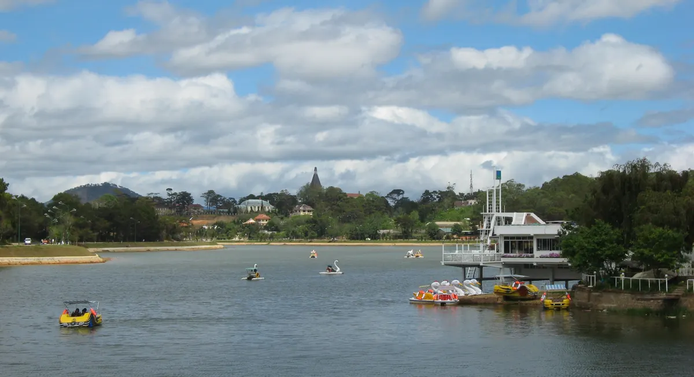

If you want a memorable BBQ dinner in Da Lat, one place worth considering is Tram Dung Chill BBQ at 111 Huynh Tan Phat, Xuan Truong Ward. It is an open-air grill rated 4.8/5 on Google Maps from 7,060 reviews (as of 4 Sep 2026), where you grill at your own table while a vintage train passes right below you at sunset. Expect to spend 95,000–300,000 VND per person, VAT included (roughly US$4–12; exchange rates change, so check the current rate).
Why BBQ suits Da Lat's cool climate
Da Lat sits at roughly 1,500 metres in Vietnam's Central Highlands, so the air stays cool all year. Unlike Saigon, where grilling outdoors usually means sweating, here the evenings are crisp and the valley glows gold at sunset. Outdoor table-side BBQ becomes an experience, not just a meal.

The staff were so helpful even though we didn't have a reservation. Food was great and would come again with the family. Highly recommended!
Tram Dung Chill — three views in one evening
The reason this place stands out for tourists is simple: you get three different views in a single sitting, all from the same table.
- From around 3:00 PM — golden afternoon light over the 180° valley and the greenhouse fields below; sunset from around 4:30 PM.
- 4:30 PM – 9:25 PM — the historic Da Lat – Trai Mat train (a roughly 7 km stretch of the original French-built railway) rolls along the track directly beneath the restaurant. You hear the whistle before you see it.
- From about 6:30 PM — thousands of greenhouses switch on their lights at once, creating a "sea of stars" spread across the dark valley.
The signature dish is the Cheese & Salted-Egg-Yolk Beef Tower (209,000 VND) — a thick slab of beef grilled at your table, finished with melted cheese and salted egg yolk. It is the dish most people photograph first.
| Detail | Information |
|---|---|
| Address | 111 Huynh Tan Phat, Xuan Truong Ward, Da Lat |
| Opening hours | 3:00 PM – 11:00 PM, every day |
| Price per person | 95,000 – 300,000 VND, VAT included (roughly US$4 – 12) |
| Rating | 4.8/5 on Google Maps (7,060 reviews as of 4 Sep 2026) |
| Booking | Online form or Zalo (Vietnam's main messaging app) at +84 989 765 070 — confirmed within about 15 minutes during opening hours |
| Phone / Zalo | 0989.765.070 |
What to order as a first-timer
The menu has more than 70 items — table-side BBQ, hot pots, seafood, sides and drinks. If you are not sure where to start, these are real crowd-favourites with honest prices.
| Dish | Price (VND) | Why try it |
|---|---|---|
| Cheese & Salted-Egg-Yolk Beef Tower | 209,000 | The signature — share between two |
| Beef & Enoki Rolls (Ba Chi Bo Cuon Kim Cham) | 137,000 | Easy, fun first grill |
| Salt-&-Pepper Grilled Beef Belly | 155,000 | Classic table-side BBQ |
| Korean-Style Pork Belly | 170,000 | For Korean-BBQ fans |
| Sturgeon "Luc Lac" (diced sturgeon) | 165,000 | Highland sturgeon, grilled fresh |
| Salt-&-Chili Grilled Shrimp | 150,000 | Light, smoky, great with beer |
| Chicken & Lemon-Basil Hot Pot (Lau Ga La E) | 300,000 | Warm finish on a cool night |
| Sweet-Potato Croquettes (Khoai Lang Ken) | 70,000 | Popular side to share |
Drinks are easy on the wallet too: fruit teas 44,000–49,000 VND, soft drinks 12,000–19,000 VND, and beer 19,000–28,000 VND. Prices include VAT and may shift slightly with the season; a 10% surcharge applies during the Lunar New Year holiday (2nd–8th day). You can browse the full list on the menu page.
How does it compare to other Da Lat BBQ options?
Da Lat has plenty of grills, and the right one depends on what you want. Here is an honest, neutral comparison by type of place — without naming or pricing other restaurants.
- Garden-style buffets — all-you-can-eat grilling in a forest or garden setting, good if you want unlimited food at a flat price.
- Korean-style BBQ spots — Korean cuts and marinades, best for travellers specifically craving K-BBQ.
- Roadside skewer stalls — quick, budget, authentic street food, great for a casual bite.
- Tram Dung Chill — open-air, grill-at-your-table, with the triple view and the train passing below; transparent à-la-carte prices (95,000–300,000 VND/person) and a free decoration setup for birthdays and anniversaries.
Where Tram Dung Chill genuinely wins for tourists: the three views in one evening, the table-side grilling, transparent à-la-carte pricing, and a free decoration setup if you are celebrating a birthday or anniversary. What it is not: a buffet, and there is no delivery — this is a sit-down, slow-evening kind of place.
Catch the train — timing matters
The vintage train is the part visitors remember most, so it helps to plan around it. The vintage train passes below the restaurant between 4:30 PM and 9:25 PM.
The vintage train passes below the restaurant between 16:30 and 21:25.
Golden window: arrive around 4:00 PM, so you are seated when the train window opens at 4:30 PM and the sunset begins. Note that between roughly 5:30 PM and 7:00 PM the restaurant is often fully booked and stops taking new tables, so either come earlier or after 7:30 PM. Full timetable details are on the Da Lat BBQ restaurant with a train view page.
Practical tips for foreign visitors
The restaurant sits about 7 km from central Da Lat, roughly a 20-minute drive towards Trai Mat, and both Grab and local taxis get there easily. Bring a light jacket for the evening, book ahead for a weekend sunset or train-view table, and mention any celebration when you reserve.
- Getting there: about 7 km from central Da Lat, roughly a 20-minute drive towards Trai Mat. Grab (Vietnam's ride-hailing app) and local taxis both work well.
- Bring a light jacket. Evenings turn cool and you will be sitting outdoors.
- Book ahead for weekends, especially for a sunset or train-view table. When you book, just say "sunset view" or "train view."
- Celebrating something? Birthday and anniversary table decoration is set up free of charge — mention it when you reserve. The restaurant takes a 200,000 VND deposit for decorations and refunds it after your meal; regular bookings need no deposit.
How to book your table
Booking is quick: fill in the online booking form or send a message on Zalo to 0989.765.070. You'll get a confirmation within about 15 minutes during opening hours. For a celebration, the birthday setup page and the date-night guide are worth a look.
Come hungry, come a little early, and let the evening unfold — the sunset, the train whistle, the smell of beef on the grill, and then the valley lighting up like a galaxy. That mix of scenery and food is hard to find anywhere else in Vietnam. Reserve your table, grab a window over the valley, and we'll keep the grill hot for you.
Frequently asked questions
How much does BBQ cost at Tram Dung Chill in Da Lat?
Around 95,000–300,000 VND per person (roughly US$4–12; exchange rates change). Prices include VAT; see the full list on the menu page.
Is it easy to order and book as a foreign visitor?
Yes. The menu has photos, prices and English dish names, and staff speak basic English. Payment is cash or bank transfer. You can book via the online form or Zalo (Vietnam's main messaging app) at 0989.765.070 and get a confirmation within about 15 minutes during opening hours.
How do I book a table at Tram Dung Chill?
Use the online booking form or message Zalo 0989.765.070. Confirmation comes within about 15 minutes during opening hours. For weekends, book a day or two ahead and ask for a sunset or train view.
What time should I arrive to see the train and sunset?
Arrive around 4:00 PM. The train passes between 4:30 PM and 9:25 PM and the sunset starts around 4:30 PM, then the greenhouse 'sea of stars' after about 6:30 PM. See the train-spotting guide.
Where is it and how do I get there?
It's at 111 Huynh Tan Phat, Xuan Truong Ward, about 7 km from central Da Lat (roughly a 20-minute drive towards Trai Mat). Grab and local taxis both work well.
What dish should I order first?
The signature Cheese & Salted-Egg-Yolk Beef Tower (209,000 VND) is the most photographed. Beef & enoki rolls (137,000 VND) are an easy, fun first grill.
Is there parking at Tram Dung Chill?
Yes — free parking for both motorbikes and cars right at the restaurant. At weekend peak hours you may need to park about 100–200m further away. We open at 15:00, so arriving early makes parking easier; Grab and taxis can drive right up to the door.